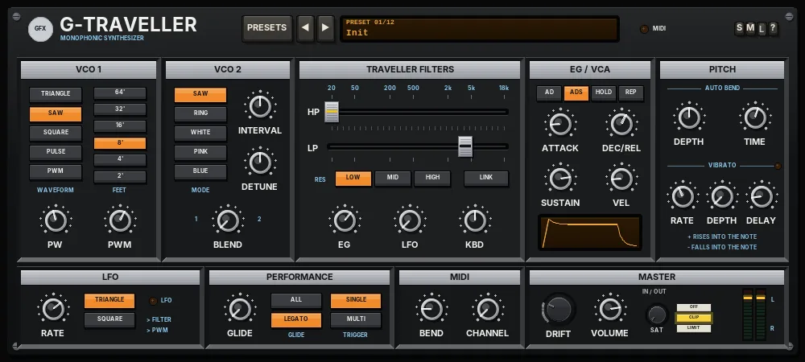

G Traveller
A monophonic two-oscillator analogue synth with a pair of sliding high-pass and low-pass filters that can travel together.

Overview
G Traveller is a monophonic synth in the spirit of a mid-70s Japanese two-oscillator monosynth: a black and silver panel, tab switches, and the two horizontal slide controls that set its filters. It plays one note at a time, with last-note priority.
VCO 1 has five waveforms and a FEET switch from 64' to 2'. VCO 2 is a second saw (tuned by INTERVAL and DETUNE), a ring modulator, or one of three noise colours. The two are blended into a 12 dB high-pass filter followed by a 12 dB low-pass filter. Each filter is set by its own TRAVELLER slider on one shared scale; with LINK on, the two move as one, so you can slide a band of frequencies up and down the spectrum.
One envelope drives both the filter and the VCA, with four modes (AD, ADS, HOLD and REPEAT). There is auto bend, so each note can slide into its pitch, a delayed vibrato, a main LFO for the filter and pulse width, and glide. It responds to pitch bend and all-notes-off (CC120 / CC123).
Reach for it for
- Thick, simple mono basses, down to 64' (three octaves below concert pitch)
- Vintage leads with glide, vibrato and a slide into each note
- Band-pass sweeps by sliding the two filters together
- Ring-modulated bells and clangs
- Wind, surf and noise effects
- Zaps, toms and other percussive synth sounds
Loading and playing it
- Insert G Traveller on a track (it is an instrument, so it needs no audio on the track).
- Arm the track for recording and set its input to your MIDI keyboard (or draw MIDI notes into an item on the track).
- Click the preset display and choose a preset, or step through them with ◄ and ►. The MIDI light flashes when notes arrive.
- If you play on a particular MIDI channel, set CHANNEL in the MIDI section; OMNI listens to all 16.
- It is monophonic: play one note at a time, or overlap notes for legato runs and glides.
Controls
The header
- PRESETS
- Opens the full preset list.
- ◄ / ►
- Step to the previous or next preset (wrapping round).
- Preset display
- Shows the preset number and name. Click it for the preset list too.
- MIDI
- Flashes when a note arrives.
- S / M / L
- Panel size: small, medium or large (a new instance opens Large). The panel also scales to fit the plugin window.
- ?
- Opens a pop-up with the design credit, the GFX website address and the address of this manual. Click anywhere to close it.
VCO 1
- WAVEFORM
- TRIANGLE (soft and round), SAW (bright and buzzy, the default), SQUARE (hollow), PULSE (a narrower, nasal pulse set by PW) or PWM (a pulse whose width is swept by the main LFO, for a moving, chorus-like tone).
- FEET
- The octave: 64', 32', 16', 8', 4' or 2'. 8' is concert pitch (the default); each step down is an octave lower, so 64' is three octaves down.
- PW
- The pulse width for PULSE, 5 - 50% (25% by default). 50% is a square; lower values sound thinner.
- PWM
- How far the LFO sweeps the pulse width in PWM, 0 - 100% (60% by default). The width moves between a square and a very narrow pulse.
VCO 2
- MODE
- SAW: a second saw oscillator (the default). RING: VCO 2's saw ring-modulated with VCO 1, for metallic, bell-like tones. WHITE, PINK and BLUE: noise instead of an oscillator - WHITE is even hiss, PINK is darker and softer, BLUE is bright and thin.
- INTERVAL
- VCO 2's pitch against VCO 1, -24 to +24 semitones (0 by default). Try 7 or 12 for fifths and octaves. It also changes the RING tone. It has no effect on the noise modes.
- DETUNE
- Fine tuning against VCO 1, -50 to +50 cents (0 by default). A few cents gives a slow, thickening beat.
- BLEND
- The mix of the two, from VCO 1 only (fully left, the default) to VCO 2 only (fully right). The value shows the percentage of VCO 2. With BLEND at VCO 1, VCO 2 is not heard at all.
TRAVELLER FILTERS
A 12 dB per octave high-pass filter (HP, yellow insert) feeds a 12 dB per octave low-pass filter (LP, black insert). Both sliders share one printed scale, 20 Hz to 18 kHz, so you can see the band of frequencies that gets through between them.
- HP
- The high-pass cut-off, 20 Hz - 18 kHz (20 Hz by default, which leaves the low end alone). Drag the cap, click the track to jump there, or use the mouse wheel (Shift for fine moves). The value shows while you hover. Double-click to reset.
- LP
- The low-pass cut-off, 20 Hz - 18 kHz (4 kHz by default). Works the same way.
- RES LOW / MID / HIGH
- Resonance for both filters. LOW is smooth (the default), MID adds a peak, HIGH rings close to self-oscillation (soft-limited, so it stays under control).
- LINK
- Off by default. When on, dragging either slider moves both together, keeping the gap between them, and EG, LFO and KBD move the high-pass as well as the low-pass, so the whole band travels as one window. When off, only the low-pass moves with EG, LFO and KBD.
- EG
- How far the envelope moves the cut-off, -100 to +100% (+30% by default; up to seven octaves at full). Negative values close the filter as the envelope rises.
- LFO
- How far the main LFO sweeps the cut-off, 0 - 100% (0 by default; up to three octaves either way at full).
- KBD
- Keyboard follow, 0 - 100% (50% by default). At 100% the cut-off moves one octave for each octave you play, from middle C, so high notes stay as bright as low ones.
EG / VCA
One envelope shapes both the filter (through EG) and the volume. As on the early units, decay and release share one time.
- AD / ADS / HOLD / REP
- The envelope mode. AD: attack, then decay to silence even while the key is held - for plucks and percussion. ADS: attack, decay to SUSTAIN, hold there while the key is down, then release (the default). HOLD: rise to full and stay there while the key is down, like an organ gate. REP (repeat): attack and decay over and over while the key is held, for a pulsing, re-triggering sound.
- ATTACK
- Attack time, 0.5 ms - 5 s (2 ms by default).
- DEC/REL
- The decay time after the attack and the release time after you let go, 10 ms - 10 s (600 ms by default).
- SUSTAIN
- The level held in ADS mode, 0 - 100% (80% by default). In the other modes it has no effect and its label reads (SUS).
- VEL
- Velocity sensitivity, 0 - 100% (15% by default). The original had none; turned up, harder notes are louder and open the filter a little.
- Envelope window
- Draws the shape of the envelope for the current settings and mode.
PITCH
- AUTO BEND DEPTH
- Makes each new note slide into its pitch, -12 to +12 semitones (OFF at 0, the default). Positive values rise into the note from below; negative values fall into it from above.
- AUTO BEND TIME
- How long the slide takes, 5 ms - 2 s (150 ms by default).
- VIBRATO RATE
- The speed of the vibrato, 1 - 12 Hz (5.5 Hz by default). The vibrato has its own sine LFO, separate from the main LFO; the light next to VIBRATO pulses with it.
- VIBRATO DEPTH
- 0 - 100 cents (0 by default, so no vibrato).
- VIBRATO DELAY
- How long the vibrato waits after a new note before fading in (over a quarter of a second), 0 - 3 s (400 ms by default). Legato notes do not restart the wait.
LFO
- RATE
- The main LFO's speed, 0.05 - 30 Hz (4 Hz by default).
- TRIANGLE / SQUARE
- The LFO's shape: a smooth sweep (the default) or a jump between two values, for trills and stepped filter moves. The light flashes with the LFO.
The main LFO goes to the filters (set by LFO in TRAVELLER FILTERS) and to the pulse width (set by PWM in VCO 1, with the PWM waveform).
PERFORMANCE
- GLIDE
- Portamento: the pitch slides from one note to the next, 0 - 2 s (OFF by default).
- ALL / LEGATO
- Glide on every note, or only when notes overlap (LEGATO, the default). When you let go of a note while still holding another, the pitch always glides back if GLIDE is up.
- SINGLE / MULTI
- The trigger. SINGLE (the default): overlapping notes do not restart the envelope or the auto bend, for smooth legato lines. MULTI: every note restarts them, from the current level, so there are no clicks.
MIDI
- BEND
- The pitch-bend range, OFF or up to +/-12 semitones (+/-2 by default).
- CHANNEL
- The MIDI channel: OMNI (all channels, the default) or 1 - 16. Incoming MIDI is passed on down the chain.
MASTER
- DRIFT
- 0 - 100% (25% by default). The tuning wanders slowly (up to +/-20 cents at 100%), VCO 2 drifts against VCO 1, the pulse width and the filter cut-offs wander, and every new note lands a little off in tune, like real analogue circuits. At 0% everything stays exact.
- VOLUME
- Output level, -24 to +6 dB (0 dB by default).
- SAT (IN / OUT)
- Band saturation on the way out: only the lows and highs are saturated (the mids stay clean), with a soft curve that loosens as the level rises. 0% by default.
- OFF / CLIP / LIMIT
- The final stage: nothing, a soft clipper at -0.3 dBFS (no latency, the default), or a lookahead limiter that holds the peaks at -0.3 dBFS (3 ms latency, compensated by REAPER). While the output clips, the CLIP key flashes red.
- L / R meters
- The output level, left and right.
Knobs: drag up or down (Shift for fine moves) or use the mouse wheel; double-click to reset a knob to its default.
Presets
Presets set VCO 1, VCO 2, the filters, the envelope, the LFO, the pitch controls, GLIDE and TRIGGER. BEND, CHANNEL, DRIFT, VOLUME and the IN / OUT controls are left as they are. Each preset is levelled so that they play at a similar loudness.
- Init
- The default sound: one saw at 8', the low-pass at 4 kHz with a little envelope, ADS.
- 64' Sub Bass
- A square three octaves down with a quiet saw an octave above it, a dark filter and a short legato glide.
- Traveller Sweep
- Two slightly detuned saws through a low, high-resonance filter, swept slowly by the LFO; HOLD envelope and glide.
- Ring Bell
- A triangle ring-modulated with VCO 2 (just under an octave up), with a long AD decay: a clanging bell.
- Wind Noise
- Pink noise through linked, resonant filters drifting slowly with the LFO, with a slow swell and long release.
- Auto-Bend Lead
- A detuned saw lead that rises 2 semitones into each note, with delayed vibrato and glide.
- Pulse Funk Bass
- A narrow pulse at 16' with a punchy, resonant filter snap and a short AD envelope.
- Vibrato Flute
- A triangle at 4' with a breath of white noise, a soft attack, delayed vibrato and a slight bend into each note.
- Resonant Zap
- A saw through a nearly closed, high-resonance filter with the envelope at full: a short laser zap.
- PWM Brass
- A slowly swept PWM wave with a detuned saw, a brassy filter swell, light vibrato and a small bend into each note.
- Synth Tom
- A square at 16' with some noise, a short AD envelope and an auto bend that falls 7 semitones: an electronic tom.
- Drone Seashore
- A saw at 32' with pink noise, linked filters swept very slowly, and the REPEAT envelope rising and falling like waves.
Tips
- For a classic band-pass sweep, bring HP up to a few hundred hertz, switch LINK on and drag either slider: the window travels up and down while its width stays the same.
- Push HP past LP and the two filters cut almost everything - back them apart to bring the sound back.
- For a fat bass, set BLEND around the middle, INTERVAL to 12 or 0 and DETUNE to a few cents.
- RING with odd INTERVAL values (try 5, 11 or 13) gives bells and gongs; add an AD envelope.
- Set the trigger to SINGLE and GLIDE to LEGATO for expressive lines that only slide when you overlap notes.
- Your edits stay until you choose another preset. To keep an edited sound, save it as a REAPER preset (the + button at the top of the plugin window).
File: gfx-g-traveller.jsfx